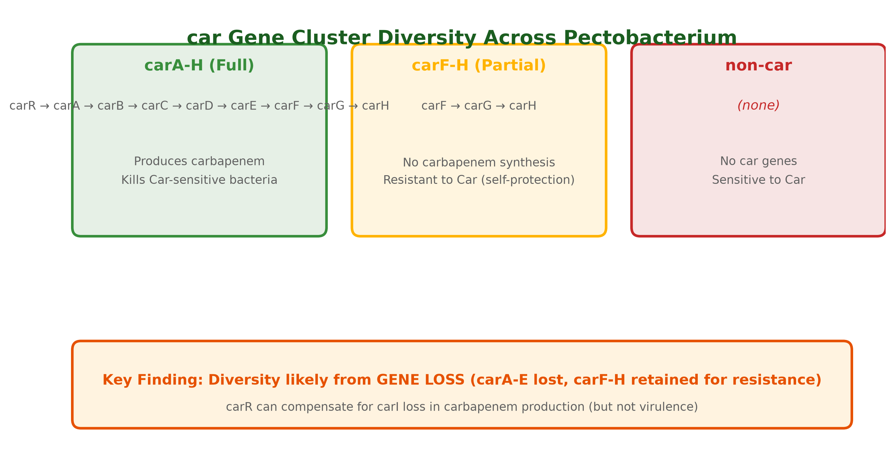
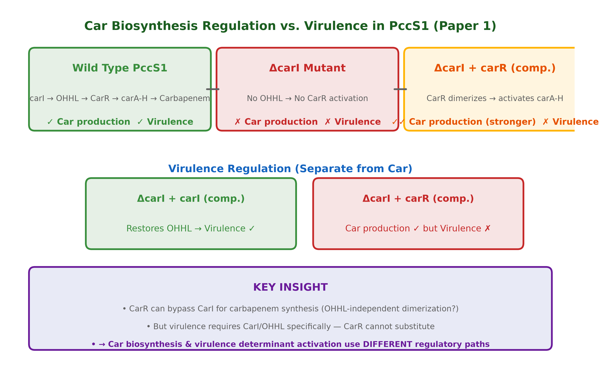

The carbapenem antibiotic cluster — evolution by gene loss, and a regulatory surprise
Carbapenem (Car) is a broad-spectrum β-lactam antibiotic produced by some Pectobacterium strains. It's regulated by quorum sensing (CarI makes OHHL signal → CarR activates carA–H). Yang et al. (2026) surveyed the car cluster across 73 Pectobacterium strains and found three distinct types.

Genes: carR → carA → carB → carC → carD → carE → carF → carG → carH
Function: Complete carbapenem biosynthesis
Phenotype: Kills Car-sensitive bacteria (halo assay)
Examples: PccS1, PC1, some P. brasiliense
Genes: carF → carG → carH only
Function: Car resistance (self-protection), no synthesis
Phenotype: Survives Car exposure; no halo
Examples: NJAU130, some P. aroidearum
Genes: None
Function: No Car synthesis, no resistance
Phenotype: Killed by Car (clear zone)
Examples: Many Pectobacterium, all Dickeya
Yang et al. argue the patchy distribution stems from gene loss, not horizontal acquisition:

Yang et al. constructed ΔcarI, ΔcarC, ΔcarR mutants and complementation strains in PccS1:
OHHL bioassay confirms: carR complementation restores OHHL production in ΔcarI, implying CarR can dimerize/activate without CarI-made signal — possibly using a homologous molecule or cryptic synthase.
Question: In P. aroidearum PccS1, complementing a ΔcarI mutant with carR restores carbapenem production (even exceeding wild type) but fails to restore virulence. What does this reveal about the relationship between carbapenem biosynthesis and virulence regulation, and what hypothesis would you test to explain the mechanism?
Write your answer in your own words. The tutor will evaluate and guide you.